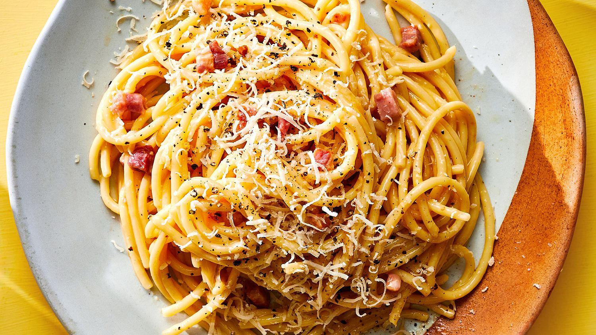

Carbonara

Description:
Carbonara is a dish made with eggs, cheese, pasta, bacon and pepper.
In the original recipe ther are no other ingredients but i like to add some mushroom and garlic
It's a simple dish, but quite sifficult to master.
Ingredients
- 200g Bacon
- 300g pasta (Spaghetti or tagliatelle)
- 4 eggs
- 100g pecorino romano cheese
- salt, pepper
optional:
- 3-4 cloves of garlic
- 4-5 heads of mushroom
- put 3l of salted water on the stove
- dice the bacon, slice the mushrooms and put them in a pan
- turn the heat under the pan to medium
- separate 2 egg yolks and mix them with the other 2 whole eggs
- grate the cheese and add it to the eggs with some ground pepper and mix well
- when the pasta water is boiling put in the pasta and boil until al dante
- when the bacon and the mushroom is geting brown add in the garlic(minced or cut in small pieces)
- when the garlic is geting a golden color cut the heat, add the pasta with a few tabelspoons of pasta water and mix well
- after the mix cooled a bit pour in the egg mixture and quickly mix it together
- put on plate, grate cheese on top and serve